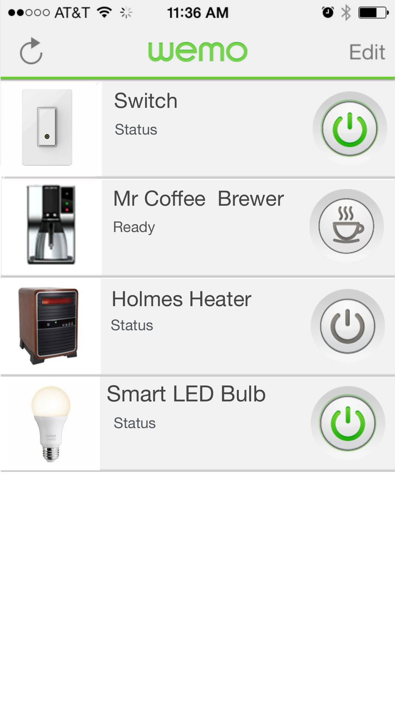
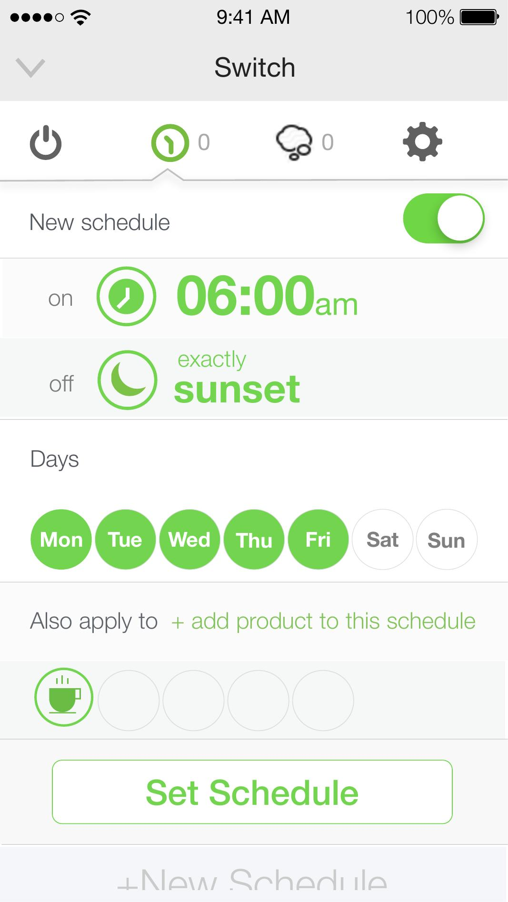

High-Fidelity Prototypes
From the InVision


From the InVision
Prototype
These screens are from the clickable InVision prototype — used for user testing and stakeholder walkthroughs. They show the full scheduling flow: from the device list, through schedule creation, to the time-mode picker with its slider interaction.

Device list — all WeMo devices visible at a glance with status and power control.

Schedule overview — clock on, sunset off, weekdays selected, apply to multiple devices.
Sunset trigger — the device turns on exactly at sunset and off at 08:00pm.
Time-mode picker — sunset selected (green), clock time below with horizontal slider.